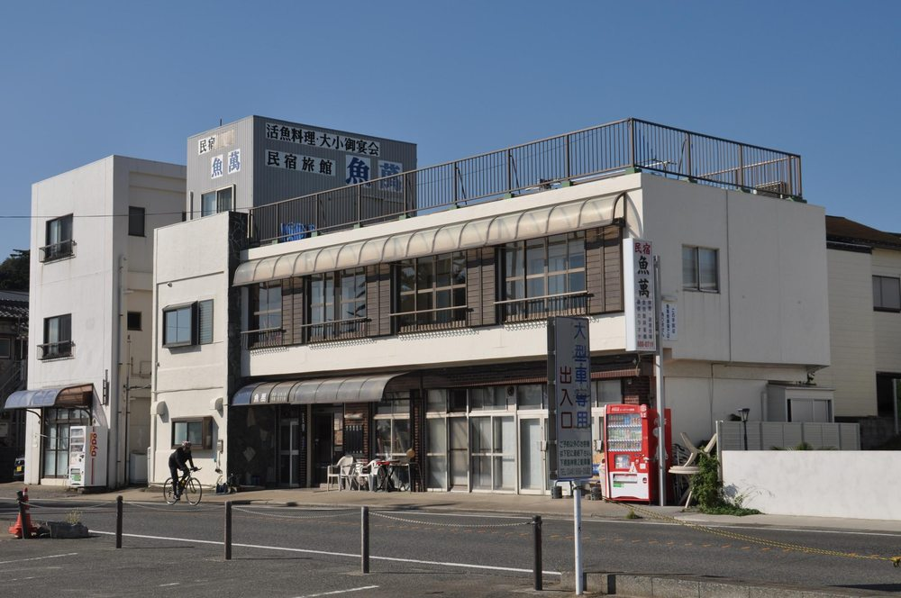
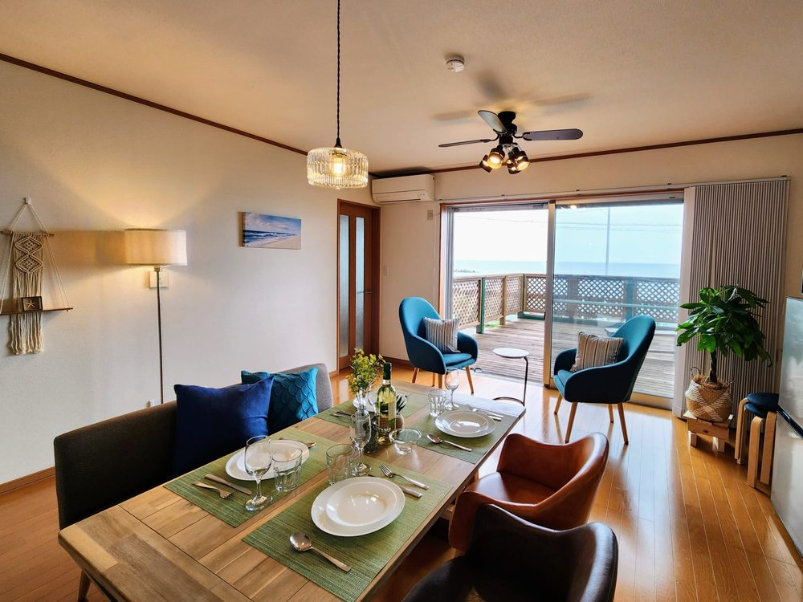

釣り合宿の第一候補A · 三浦市／三浦海岸
民宿 魚萬
宿の案内に、目の前の浜での投げ釣り。
寒くなったら部屋へ、夜はのんびり麻雀も。
海岸0〜1分 ※和室麻雀プランあり
¥4,000〜1人／素泊まり通常の公式掲載額。12/31の料金・空室は要確認。
※ 宿公式は徒歩0分、観光協会は徒歩1分と案内。
元旦の釣り可能区間・出入り・道具の扱いを宿に確認。窓から釣れるという案内ではありません。
A LITTLE NEW YEAR ESCAPE.
釣って、あったまって、初日の出。
部屋と海を行き来する、気ままなお泊まり会。
釣れなくても、いい年にしよう。
01 / FIND OUR BASE
「窓から直接」ではなく、宿を出て海岸へ。
釣りとの相性なら民宿、部屋時間なら貸別荘。
まずは、この2軒から。

釣り合宿の第一候補A · 三浦市／三浦海岸
宿の案内に、目の前の浜での投げ釣り。
寒くなったら部屋へ、夜はのんびり麻雀も。
※ 宿公式は徒歩0分、観光協会は徒歩1分と案内。
元旦の釣り可能区間・出入り・道具の扱いを宿に確認。窓から釣れるという案内ではありません。

部屋時間を楽しむならB · 横須賀市／津久井浜
海を眺めるリビングと、みんなのキッチン。
一棟貸しで、ゆっくり過ごす年越しに。
釣り場への入口・経路と早朝外出は要確認。
生魚などの調理は遠慮する規定あり。騒音・宴会不可、21時以降は窓を閉め室内で過ごすルールです。
C · 予備候補／三浦市
三浦海岸駅から徒歩2分。観光協会掲載は1人1泊2食 ¥7,500〜。
海岸までの経路・釣りとの相性・12/31の営業と空室は未確認。
確認日：2026年10月6日。電話での問い合わせ・予約は行っていません。予約サイトを開いたら、2026年12月31日〜2027年1月1日と実際の人数を選んでください。
02 / ON THE EAST SIDE
今回の候補は、津久井浜〜三浦海岸。津久井浜は、房総半島から昇る初日の出の観賞スポットとして案内されています。
部屋から見えるかは窓の向き次第。朝日を確実に見られる保証はなく、当日の天候・浜への経路も事前に確認しよう。
逗子・葉山だけに絞らず、横須賀南部と三浦市まで候補を広げています。
海沿いの位置関係をチェック。
表示ボタンを押すとGoogleマップを読み込みます。表示できない場合も、各宿の「地図を見る」から外部の地図を開けます。
03 / TWO DAYS, NO HURRY
時刻は、宿が決まってから。
釣りをしない人も、寝坊する人も、それぞれに。
ごはんと飲み物を用意。明るいうちに浜の入口と、宿へ戻る道を下見する。
ごはんに、ゲームに、おしゃべり。宿の静粛時間を守って、翌朝の体力も残しておく。
防寒して海へ。人が多い場所では竿を振らず、朝日を眺める時間に切り替える。
写真を見返して、朝ごはん。宿のチェックアウト時刻に合わせて、のんびり解散。